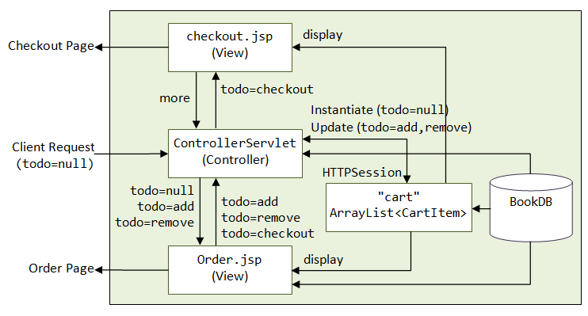

Java Web Database Applications
Database Connection Pooling in Tomcat with MySQL
Reference: "Apache Tomcat 7.0 JNDI Datasource How-To" @ http://tomcat.apache.org/tomcat-7.0-doc/jndi-datasource-examples-howto.html.
I shall assume that you are familiar with Tomcat and MySQL. Otherwise, read "How to Install and Get Started with Tomcat" and "How to Install and Get Started with MySQL". I shall denote Tomcat's and MySQL's installed directory as $CATALINA_HOME and $MYSQL_HOME respestively.
Creating a new database connection for each client request is grossly inefficient, due to the high overhead involved in opening/maintaining/closing the connection. Instead, we usually set up a database connection pool, which maintains a number of database connections. A server-side program, in response to a client request, picks up an already-created connection from the pool. After the request is completed, the connection is not closed, but returned to the pool to handle further request.
To configure Tomcat/MySQL for supporting Database Connection Pooling (DBCP):
Step 1: MySQL Database Driver - Copy the MySQL Connector/J JDBC Driver's jar-file (e.g., mysql-connector-java-5.1.xx-bin.jar) into Tomcat's "lib", i.e., $CATALINA_HOME/lib.
Step 2: Create Web Application - Let's start a new web application called "hellodbcp" to test database connection pooling. Create a directory "hellodbcp" under $CATALINA_HOME/webapps. Create sub-directories "WEB-INF" and "META-INF" under the context root "hellodbcp". Create sub-sub-directories "src", "classes", and "lib" under "WEB-INF".
Step 3: Configure JNDI Datasource - Next, we shall configure the JNDI (Java Naming and Directory Interface) Datasource in "context.xml". For application-specific configuration, save it under "webapps\hellodbcp\META-INF". For server-wide configuration, put the <Resource> element under <GlobalNamingResources> in $CATALINA_HOME\conf\server.xml.
<?xml version='1.0' encoding='ISO-8859-1' ?> <Context reloadable="true"> <!-- maxActive: Maximum number of dB connections in pool. Set to -1 for no limit. maxIdle: Maximum number of idle dB connections to retain in pool. Set to -1 for no limit. maxWait: Maximum milliseconds to wait for a dB connection to become available Set to -1 to wait indefinitely. --> <Resource name="jdbc/TestDB" auth="Container" type="javax.sql.DataSource" maxActive="100" maxIdle="30" maxWait="10000" removeAbandoned="true" username="myuser" password="xxxx" driverClassName="com.mysql.jdbc.Driver" url="jdbc:mysql://localhost:3306/ebookshop" /> </Context>
The above configuration declares a JNDI resource name called "jdbc/TestDB" corresponds to the MySQL connection "mysql://localhost:3306/ebookshop".
Check the database-url, username and password. I shall assume that the MySQL server is running on the default port number of 3306, with "ebookshop" as the default database. The database contains a table called books, with 5 columns: id, title, author, price and qty, as illustrated below.
Database: ebookshop Table: books +-------+----------------------------+---------------+---------+-------+ | id | title | author | price | qty | | (INT) | (VARCHAR(50)) | (VARCHAR(50)) | (FLOAT) | (INT) | +-------+----------------------------+---------------+---------+-------+ | 1001 | Java for dummies | Tan Ah Teck | 11.11 | 11 | | 1002 | More Java for dummies | Tan Ah Teck | 22.22 | 22 | | 1003 | More Java for more dummies | Mohammad Ali | 33.33 | 33 | | 1004 | A Cup of Java | Kumar | 44.44 | 44 | | 1005 | A Teaspoon of Java | Kevin Jones | 55.55 | 55 | +-------+----------------------------+---------------+---------+-------+
You could use the following SQL script to set up the database.
create database if not exists ebookshop; use ebookshop; drop table if exists books; create table books ( id int, title varchar(50), author varchar(50), price float, qty int, primary key (id)); insert into books values (1001, 'Java for dummies', 'Tan Ah Teck', 11.11, 11); insert into books values (1002, 'More Java for dummies', 'Tan Ah Teck', 22.22, 22); insert into books values (1003, 'More Java for more dummies', 'Mohammad Ali', 33.33, 33); insert into books values (1004, 'A Cup of Java', 'Kumar', 44.44, 44); insert into books values (1005, 'A Teaspoon of Java', 'Kevin Jones', 55.55, 55);
Step 4: Configure "web.xml" - Next, configure the application's deployment descriptors in "hellodbcp\WEB-INF\web.xml", with a datasource references the JNDI resource name "jdbc/TestDB" defined earlier.
<web-app xmlns="http://java.sun.com/xml/ns/j2ee"
xmlns:xsi="http://www.w3.org/2001/XMLSchema-instance"
xsi:schemaLocation="http://java.sun.com/xml/ns/j2ee http://java.sun.com/xml/ns/j2ee/web-app_2_4.xsd"
version="2.4">
<resource-ref>
<description>DB Connection Pool</description>
<res-ref-name>jdbc/TestDB</res-ref-name>
<res-type>javax.sql.DataSource</res-type>
<res-auth>Container</res-auth>
<res-sharing-scope>Shareable</res-sharing-scope>
</resource-ref>
</web-app>
Step 5: JSP with Connection Pooling - Let's write a JSP page to query the database with connection pooling as follows. Save the codes as "query.jsp" under "hellodbcp".
<%@ taglib uri="http://java.sun.com/jsp/jstl/sql" prefix="sql" %>
<%@ taglib uri="http://java.sun.com/jsp/jstl/core" prefix="c" %>
<sql:setDataSource var="ds" dataSource="jdbc/TestDB" />
<sql:query sql="select author, title from books" var="rs" dataSource="${ds}" />
<html>
<head><title>Test Database Connection Pooling</title></head>
<body>
<h2>Results</h2>
<table>
<c:forEach var="row" items="${rs.rows}">
<tr>
<td>${row.author}</td>
<td>${row.title}</td>
</tr>
</c:forEach>
</table>
</body>
</html>
This JSP page uses the JSTL standard tags, which requires "jstl.jar" and "standard.jar". You can copy the jar files from "examples\WEB-INF\lib" into "hellodbcp\WEN-INF\lib".
To invoke the JSP page: Start the Tomcat and MySQL servers, and issue URL http://localhost:8080/hellodbcp/query.jsp. I shall assume that Tomcat is running on port number 8080.
Step 6: Servlet with Connection Pooling - Let's write a servlet called "MySQLDbcpServlet" that uses database connection pool as follow:
// Save as "hellodbcp\WEB-INF\src\mypkg\MySQLDbcpServlet.java" package mypkg; import java.io.*; import javax.servlet.*; import javax.servlet.http.*; import java.sql.*; import javax.sql.DataSource; import javax.naming.*; public class MySQLDbcpServlet extends HttpServlet { DataSource pool; // Database connection pool @Override public void init( ) throws ServletException { try { // Create a JNDI Initial context to be able to lookup the DataSource InitialContext ctx = new InitialContext(); // Lookup the DataSource, which will be backed by a pool // that the application server provides. pool = (DataSource)ctx.lookup("java:comp/env/jdbc/TestDB"); if (pool == null) throw new ServletException("Unknown DataSource 'jdbc/TestDB'"); } catch (NamingException ex) { ex.printStackTrace(); } } @Override public void doGet(HttpServletRequest request, HttpServletResponse response) throws IOException, ServletException { // Set the response message's MIME type response.setContentType("text/html;charset=UTF-8"); // Allocate a output writer to write the response message into the network socket PrintWriter out = response.getWriter(); Connection conn = null; Statement stmt = null; try { out.println("<!DOCTYPE html>"); out.println("<html>"); out.println("<head><title>Qurey Servlet</title></head>"); out.println("<body>"); // Get a connection from the pool conn = pool.getConnection(); // Normal JBDC programming hereafter. Close the Connection to return it to the pool stmt = conn.createStatement(); ResultSet rset = stmt.executeQuery("SELECT title, author FROM books"); int count=0; while(rset.next()) { out.println("<p>" + rset.getString("title") + ", " + rset.getString("author") + "</p>"); ++count; } out.println("<p>==== " + count + " rows found =====</p>"); out.println("</body></html>"); } catch (SQLException ex) { ex.printStackTrace(); } finally { out.close(); try { if (stmt != null) stmt.close(); if (conn != null) conn.close(); // return to pool } catch (SQLException ex) { ex.printStackTrace(); } } } }
Save the "MySQLDbcpServlet.java" under "hellodbcp\WEB-INF\src\mypkg". Use the following commands to compile the program (so as to place the generated classes in the appropriate directory depicted by the package structure):
-- change directory to "hellodbcp\WEB-INF\classes" d:...> cd \$CATALINA_HOME\webapps\helloservlet\WEB-INF\classes -- Compile the source specifying the destination directory d:\$CATALINA_HOME\webapps\hellodbcp\WEB-INF\classes> javac -d . ..\src\mypkg\MySQLDbcpServlet.java
Configure the servlet by creating a deployment descriptor in "hellodbcp\WEB-INF\web.xml":
<web-app xmlns="http://java.sun.com/xml/ns/j2ee"
xmlns:xsi="http://www.w3.org/2001/XMLSchema-instance"
xsi:schemaLocation="http://java.sun.com/xml/ns/j2ee http://java.sun.com/xml/ns/j2ee/web-app_2_4.xsd"
version="2.4">
<resource-ref>
<description>DB Connection Pool</description>
<res-ref-name>jdbc/TestDB</res-ref-name>
<res-type>javax.sql.DataSource</res-type>
<res-auth>Container</res-auth>
</resource-ref>
<servlet>
<servlet-name>MySQLDbcpExample</servlet-name>
<servlet-class>mypkg.MySQLDbcpServlet</servlet-class>
</servlet>
<servlet-mapping>
<servlet-name>MySQLDbcpExample</servlet-name>
<url-pattern>/trydbcp</url-pattern>
</servlet-mapping>
</web-app>
To invoke the servlet: Start the Tomcat and MySQL servers, and issue URL http://localhost:8080/hellodbcp/trydbcp.
An MVC EBookShop with Servlets, JSPs, and JavaBeans Deployed in Tomcat
MVC (Model-View-Control) is a design pattern (or framework) that aims to separate the application logic (Control) and data (Model) from the presentation (View).
Let us illustrate the MVC framework with an E-Bookshop example. In this example, JavaBeans (special Java classes) are used as data model to hide the underlying data operations (e.g., database operations); JSPs are used for view (presentation) to present the response to the client; and servlets are used as controller for implementing application logic and instantiate JavaBeans, as illustrate in the following diagram. HTTP session tracking is enabled via a HTTPSession object.
Create a New Web Application
We shall call our web application "mvc_ebookshop".
I shall assume that you use an IDE, such as NetBeans or Eclipse, to develop the web application. An IDE greatly improves on your productivity. It also enables debugging.
(For NetBeans Users) Create a web application called "mvc_ebookshop":
- From "File" menu ⇒ choose "New Project...".
- In "Choose Project" ⇒ Under "Categories", choose "Java Web" ⇒ Under "Projects", choose "Web Application" ⇒ "Next".
- In "Name and Location" ⇒ In "Project Name", enter "
mvc_ebookshop" ⇒ In "Project Location", select a suitable directory to save your works ⇒ Check "Set as Main Project" ⇒ Next. - In "Server and settings" ⇒ Select your Tomcat server, or "add" a new Tomcat server ⇒ Choose the latest "Java EE Version" ⇒ In "Context Path", use "
/mvc_ebookshop" ⇒ Next. - In "Frameworks" ⇒ Select none for pure servlet/JSP application ⇒ Finish.
Design
Model: Book Database - "BookDB.java"
Instead of using a relational database (such as MySQL) to store the data, we shall simplify the problem by using a Java class called BookDB.java to keep all our books, as follows. We shall keep all our Java classes in a package called mypkg.
(For NetBeans Users) Expand on your project node ⇒ Right-click on "Source Packages" ⇒ New ⇒ Java Class... ⇒ Enter "BookDB" in Class Name; Enter "mypkg" in Package.
package mypkg; /** * Book Database * Keep the title, author and price of books in separate arrays. * The array index is used as the bookID for retrieval. * All the entities are static. You could use BookDB.getTitle(bookID), * BookDB.getAuthor(bookID) and BookDB.getPrice(bookID) to retrieve the * title, author and price for a particular bookID. */ public class BookDB { private static String[] titles = { "Java for Dummies", "More Java for Dummies", "Java for Idiots", "Java for More Idiots" }; private static String[] authors = { "Tan Ah Teck", "Tan Ah Teck", "Mohd Ali", "Mohd Ali" }; private static float[] prices = { 19.99f, 29.99f, 39.99f, 49.99f }; /** Return the number of books in the database */ public static int size() { return titles.length; } /** Return the title of the given bookID */ public static String getTitle(int bookID) { return titles[bookID]; } /** Return the author of the given bookID */ public static String getAuthor(int bookID) { return authors[bookID]; } /** Return the price of the given bookID */ public static float getPrice(int bookID) { return prices[bookID]; } }
"CartItem.java"
We need to maintain a shoppng cart, which is an ArrayList of CartItem. The shopping cart is placed inside an HTTPSession via an attribute "cart".
package mypkg;
public class CartItem {
private int bookID;
private int qtyOrdered;
public CartItem(int bookID, int qtyOrdered) {
this.bookID = bookID;
this.qtyOrdered = qtyOrdered;
}
public int getBookID() {
return bookID;
}
public void setBookID(int bookID) {
this.bookID = bookID;
}
public int getQtyOrdered() {
return qtyOrdered;
}
public void setQtyOrdered(int qtyOrdered) {
this.qtyOrdered = qtyOrdered;
}
// Returns the author based on this bookID
public String getAuthor() {
return BookDB.getAuthor(bookID);
}
// Returns the author based on this bookID
public String getTitle() {
return BookDB.getTitle(bookID);
}
// Return the price based on this bookID
public float getPrice() {
return BookDB.getPrice(bookID);
}
}
Controller: "ControllerServlet.java"
We shall define a URL "/shopping" for for the ControllerServlet.
The controller serves these functions:
- It is the entry point of the web application. A web user issues
http://hostname:port/mvc_ebookshop/shoppingto start the web application. - For the first access, it instantiates an
HTTPSession, which maintains a shopping cart via an attribute "cart". It then dispatches to "order.jsp" (todo=null). - The "
order.jsp" page displays the books and shopping cart. User can add or remove a book into/from the cart (via request parameter "todo=add" or "todo=remove") or check out (via "todo=checkout"). "Order.jsp" submits to this controller. - For "
todo=add" and "todo=remove", the controller updates the cart (retrieved from theHTTPSession), and dispatches to "order.jsp" for more shopping. For "todo=checkout", the controller computes the totals and dispatches to "checkout.jsp".
(NetBeans) Expand on your project node ⇒ Right-click on "Source Packages" ⇒ New ⇒ Others ⇒ In "Categories", select "Web" ⇒ In "File Types", select "Servlet" ⇒ In "Class Name", enter "ControllerServlet" ⇒ In "Package", enter "mypkg" ⇒ Next ⇒ Check "Add Information to deployment descriptor (web.xml)" ⇒ In "URL Pattern", enter "/shopping" ⇒ "Finish".
package mypkg;
import java.io.*;
import java.util.*;
import javax.servlet.*;
import javax.servlet.annotation.WebServlet;
import javax.servlet.http.*;
@WebServlet("/shopping") // Define URL pattern (for servlet 3.0 only)
public class ControllerServlet extends HttpServlet {
private static final long serialVersionUID = 1L;
@Override
public void init(ServletConfig conf) throws ServletException {
super.init(conf);
}
@Override
protected void doGet(HttpServletRequest request, HttpServletResponse response)
throws ServletException, IOException {
doPost(request, response); // Same as doPost()
}
@Override
protected void doPost(HttpServletRequest request,
HttpServletResponse response) throws ServletException, IOException {
// Retrieve the current session, or create a new session if no session exists.
HttpSession session = request.getSession(true);
// Retrieve the shopping cart of the current session.
List<CartItem> theCart = (ArrayList<CartItem>) session.getAttribute("cart");
// For dispatching the next Page
String nextPage = "";
String todo = request.getParameter("todo");
if (todo == null) {
// First access - redirect to order.jsp
nextPage = "/order.jsp";
} else if (todo.equals("add")) {
// Submitted by order.jsp, with request parameters bookID and qty.
// Create a CartItem for the selected book, and add it into the cart
CartItem newCartItem = new CartItem(
Integer.parseInt(request.getParameter("bookID")),
Integer.parseInt(request.getParameter("qty")));
if (theCart == null) { // shopping cart is empty
theCart = new ArrayList<>();
theCart.add(newCartItem);
session.setAttribute("cart", theCart); // binds cart to session
} else {
// Check if this book is already in the cart.
// If so, update the qty ordered. Otherwise, add it to the cart.
boolean found = false;
Iterator iter = theCart.iterator();
while (!found && iter.hasNext()) {
CartItem aCartItem = (CartItem)iter.next();
if (aCartItem.getBookID() == newCartItem.getBookID()) {
aCartItem.setQtyOrdered(aCartItem.getQtyOrdered()
+ newCartItem.getQtyOrdered());
found = true;
}
}
if (!found) { // Add it to the cart
theCart.add(newCartItem);
}
}
// Back to order.jsp for more order
nextPage = "/order.jsp";
} else if (todo.equals("remove")) {
// Submitted by order.jsp, with request parameter cartIndex.
// Remove the CartItem of cartIndex in the cart
int cartIndex = Integer.parseInt(request.getParameter("cartIndex"));
theCart.remove(cartIndex);
// Back to order.jsp for more order
nextPage = "/order.jsp";
} else if (todo.equals("checkout")) {
// Submitted by order.jsp.
// Compute the total price for all the items in the cart
float totalPrice = 0;
int totalQtyOrdered = 0;
for (CartItem item: theCart) {
float price = item.getPrice();
int qtyOrdered = item.getQtyOrdered();
totalPrice += price * qtyOrdered;
totalQtyOrdered += qtyOrdered;
}
// Format the price in float to 2 decimal places
StringBuilder sb = new StringBuilder();
Formatter formatter = new Formatter(sb); // Send all output to sb
formatter.format("%.2f", totalPrice); // 2 decimal places
// Put the total price and qty in request header
request.setAttribute("totalPrice", sb.toString());
request.setAttribute("totalQtyOrdered", totalQtyOrdered + "");
// Dispatch to checkout.jsp
nextPage = "/checkout.jsp";
}
ServletContext servletContext = getServletContext();
RequestDispatcher requestDispatcher = servletContext.getRequestDispatcher(nextPage);
requestDispatcher.forward(request, response);
}
}
In web.xml, map this servlet to URL pattern /shopping.
<?xml version="1.0" encoding="UTF-8"?>
<web-app version="2.5" xmlns="http://java.sun.com/xml/ns/javaee"
xmlns:xsi="http://www.w3.org/2001/XMLSchema-instance"
xsi:schemaLocation="http://java.sun.com/xml/ns/javaee http://java.sun.com/xml/ns/javaee/web-app_2_5.xsd">
<servlet>
<servlet-name>eBookShop</servlet-name>
<servlet-class>mypkg.ControllerServlet</servlet-class>
</servlet>
<servlet-mapping>
<servlet-name>eBookShop</servlet-name>
<url-pattern>/shopping</url-pattern>
</servlet-mapping>
</web-app>
Note: In servlet 3.0 (Tomcat 7), you could use annotation @WebServlet("/shopping") (which is commented-out) to configure the URL pattern instead of using web.xml.
View: Order Page - "order.jsp"
<%-- Order Page --%> <%@page contentType="text/html" pageEncoding="UTF-8"%> <%@page session="true" import="java.util.*, mypkg.*" %> <!DOCTYPE html> <html> <head> <meta http-equiv="Content-Type" content="text/html; charset=UTF-8"> <title>E-BookShop Order</title> </head> <body> <h2>Yet Another E-Bookshop</h2> <hr /><br /> <p><strong>Choose a book and enter the quantity:</strong></p> <form name="AddForm" action="shopping" method="POST"> <input type="hidden" name="todo" value="add"> Select Book: <select name=bookID> <% // Scriptlet 1: Populate the books into the "select" control. for (int i = 0; i < BookDB.size(); ++i) { out.println("<option value='" + i + "'>"); out.println(BookDB.getTitle(i) + " | " + BookDB.getAuthor(i) + " | " + BookDB.getPrice(i)); out.println("</option>"); } %> </select> Enter Quantity: <input type="text" name="qty" size="10" value="1"> <input type="submit" value="Add to Shopping Cart"> </form> <br /><hr /><br /> <% // Scriptlet 2: Check whether the shopping cart is empty. List<CartItem> theCart = (List<CartItem>) session.getAttribute("cart"); if (theCart != null && theCart.size() > 0) { %> <p><strong>Your shopping cart contains:</strong></p> <table border="1" cellspacing="0" cellpadding="5"> <tr> <th>Title</th> <th>Author</th> <th>Price</th> <th>Quantity</th> <th> </th> </tr> <% // Scriptlet 3: display the books in the shopping cart. for (int i = 0; i < theCart.size(); ++i) { CartItem aCartItem = theCart.get(i); %> <tr> <form name="removeForm" action="shopping" method="POST"> <input type="hidden" name="todo" value="remove"> <input type="hidden" name="cartIndex" value="<%= i %>"> <td><%= aCartItem.getTitle() %></td> <td><%= aCartItem.getAuthor() %></td> <td align="right">$<%= aCartItem.getPrice() %></td> <td align="right"><%= aCartItem.getQtyOrdered() %></td> <td><input type="submit" value="Remove from Shopping Cart"></td> </form> </tr> <% } // for loop %> </table><br /> <form name="checkoutForm" action="shopping" method="POST"> <input type="hidden" name="todo" value="checkout"> <input type="submit" value="Checkout"> </form> <% } // if %> </body> </html>
View: Checkout Page - "checkout.jsp"
<%-- Checkout Page --%> <%@page contentType="text/html" pageEncoding="UTF-8"%> <%@page session="true" import="java.util.*, mypkg.*" %> <!DOCTYPE html> <html> <head> <meta http-equiv="Content-Type" content="text/html; charset=UTF-8"> <title>E-BookShop Checkout</title> </head> <body> <h2>Yet Another E-Bookshop - Checkout</h2> <hr /><br /> <p><strong>You have ordered the following book(s):</strong></p> <table border="1" cellspacing="0" cellpadding="5"> <tr> <th>Title</th> <th>Author</th> <th>Price</th> <th>Quantity</th> </tr> <% // Scriptlet 1: Display the items in shopping cart List<CartItem> theCart = (List<CartItem>) session.getAttribute("cart"); for (CartItem item : theCart) { %> <tr> <td><%= item.getTitle()%></td> <td><%= item.getAuthor()%></td> <td align="right">$<%= item.getPrice()%></td> <td align="right"><%= item.getQtyOrdered()%></td> </tr> <% } // for session.invalidate(); %> <tr> <th align="right" colspan="2">Total</th> <th align="right">$<%= request.getAttribute("totalPrice")%></th> <th align="right"><%= request.getAttribute("totalQtyOrdered")%></th> </tr> </table> <br /> <a href="shopping">Click here to buy more books!</a> </body> </html>
Take note that JSP deals with the view (presentation). The codes are rather slight forward. [TODO more]
Configuring "web.xml"
In "mvc_ebookshop\WEB-INF\web.xml", configure the URL path "\shopping" for "ControllerSevlet"; and set the URL "\shopping" as the welcome page for directory request, as follows:
<?xml version="1.0" encoding="UTF-8"?>
<web-app version="2.5" xmlns="http://java.sun.com/xml/ns/javaee"
xmlns:xsi="http://www.w3.org/2001/XMLSchema-instance"
xsi:schemaLocation="http://java.sun.com/xml/ns/javaee http://java.sun.com/xml/ns/javaee/web-app_2_5.xsd">
<servlet>
<servlet-name>Controller</servlet-name>
<servlet-class>mypkg.ControllerServlet</servlet-class>
</servlet>
<servlet-mapping>
<servlet-name>Controller</servlet-name>
<url-pattern>/shopping</url-pattern>
</servlet-mapping>
<session-config>
<session-timeout>
30
</session-timeout>
</session-config>
<welcome-file-list>
<welcome-file>shopping</welcome-file>
</welcome-file-list>
</web-app>
Run the Web Application
Start Tomcat, and issue URL http://hostname:port/mvc_ebookshop (using the welcome page of the directory) or http://hostname:port/mvc_ebookshop/shopping.
(For NetBeans User) Right-click on the project ⇒ "Clean and Build" ⇒ "Deploy" (take note of the URL of the web application) ⇒ "Run".
MVC with MySQL Database
Let us rewrite the above application with data maintained in MySQL database. Let's call our new application "mvcdb_ebookshop".
[TODO]
REFERENCES & RESOURCES
- TODO
Latest version tested: NetBeans 7.0 with Tomcat 7.0.21, Eclipse JavaEE 3.6 with Tomcat 7.0
Last modified: September, 2011